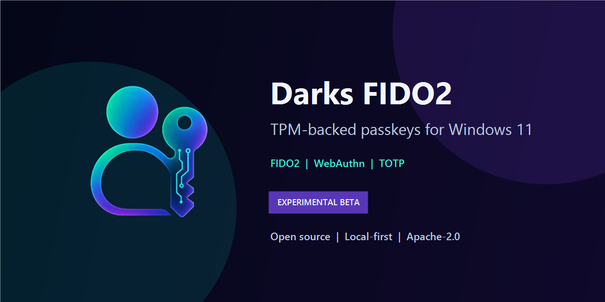

01
FIDO2 and WebAuthn
Functions as a registered native Windows 11 passkey provider companion for browser and desktop WebAuthn create and get requests.

Darks FIDO2Windows 11 (24H2+) & Windows 10 · FIDO2 · WebAuthn · TPM 2.0
Darks FIDO2 is an open-source, local-first virtual FIDO2/WebAuthn authenticator for Windows. It combines silicon hardware passkeys, AES-256-GCM encrypted profiles, an offline RFC 6238 TOTP engine, and a secure password generator into a unified Neumorphic desktop suite.
v0.6.4 Beta Released — Review the limitations before relying on it.
What it does
Create and manage local hardware-isolated passkeys, respond to native WebAuthn ceremonies, and generate secure time-based 2FA codes without any cloud reliance.
Functions as a registered native Windows 11 passkey provider companion for browser and desktop WebAuthn create and get requests.
Derives non-exportable ES256 hardware keys via Microsoft Platform Crypto Provider with direct TBS diagnostics and explicit key deletion.
Protects credentials under independent AES-256-GCM vaults with PBKDF2 (600,000 rounds), optional 64-byte physical keyfiles, and DPAPI.
5 independent character sets (Digits, Lowercase, Uppercase, Symbols, Extended ASCII), CSPRNG shuffle, zero disk retention, and 10s clipboard wipe.
Offline 2FA authenticator with live countdown meters, image importing, and an instant on-screen visual QR code sniper.
Tamper-evident ECDSA-signed CSV audit logging with cryptographic in-memory key scrubbing upon vault lock or disposal.
Big Release
Major usability, security, and interface enhancements across the entire stack:
Generate high-entropy passwords with independent toggles for all character sets. Zero disk persistence and 10s auto-clearing clipboard.
Standardized master PIN requirement to strictly 6 characters across UI, storage, and validation layers, eliminating creation lockouts.
Automatically scans local app storage for unindexed vault directories to ensure no profiles are ever lost during transitions.
Safely erase silicon-derived TPM hardware keys from the UI with interactive confirmation, NCrypt cleanup, and audit logging.
Masks raw Credential IDs and Public Keys by default in the Credentials Inspector, requiring Master PIN verification to reveal.
20px left-aligned table spacing, responsive wrapping toolbar, standardized status capsules, and 23/23 passing automated tests.
Interface Showcase
Quick start
Darkbyte-INC.cer public certificate in your Current User Trusted People store.DarksFIDO2-Setup.exe and enable Darks FIDO2 under Windows Settings > Accounts > Passkeys.Trust and transparency
Darks FIDO2 is Apache-2.0 licensed and experimental. Review the security policy, threat model, security audit (0.6.4), release notes, and compatibility notes before use.